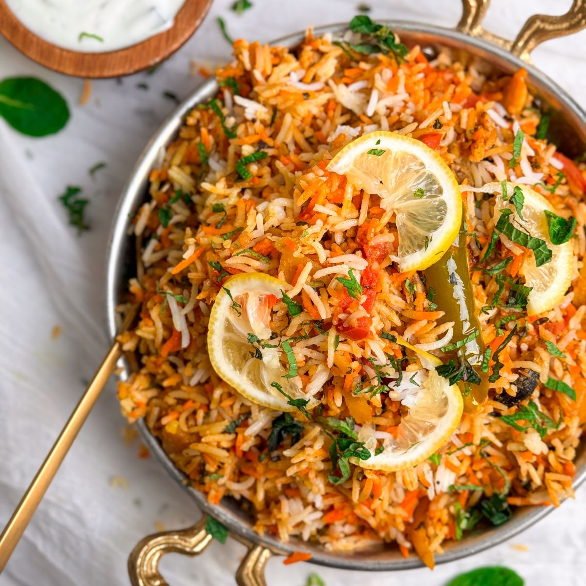

Usman
North Brunswick, NJ
I want to...
- Go to school
- Get a job
- Do cool stuff
- Continue doing cool stuff
Some of my hobbies include:
- Drawing (specefically portraits)
- Cooking
- Film Photography (I've restored my grandfathers old medium format cameras)
- Playing drums (drumz are fun)
When I do cook its usually for large events. I am lukcy to have a big family so when we get together, theres always good food. Here are pictures of some of my favorite dishes to cook:
- Biryani (An extravagant flavorful rice dish, either made with chicken, beef, or mutton) 
- Karahi Chicken (Karahi means a large, shallow wok. A charcoal smoked chicken stir fried with arromatics, cut ginger, and fresh green chillies)
- Lasagna(I mean, it's a fan favorite. The name speaks for itself)